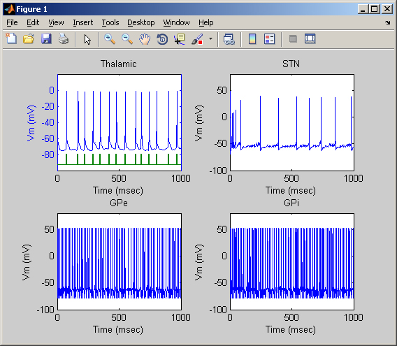
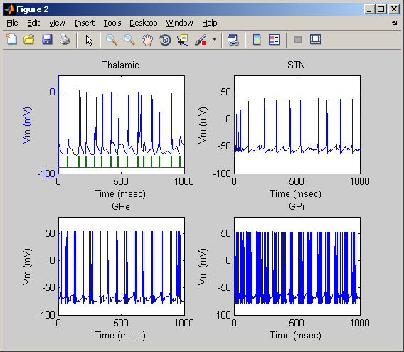
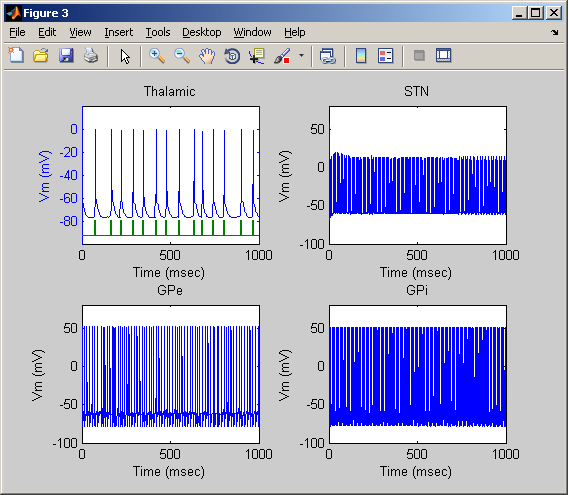

These are the model files for the paper: So RQ, Kent AR, Grill WM. (2011) Relative contributions of local cell and passing fiber activation and silencing to changes in thalamic fidelity during deep brain stimulation and lesioning: a computational modeling study. J Comput Neurosci 2011 Oct 5 These files are written in Matlab. Make sure you have Matlab installed. --------------------------------------------------------------------------- To Launch model: Run initial.m by typing initial on the matlab command line. Allow around three minutes for script to finish. This will output the error index (EI) for the conditions of healthy, Parkinson's Disease (PD), and PD with deep brain stimulation at 130Hz. Figures 1,2 and 3 will plot example membrane potentials for thalamic, subthalmic nucleus (STN) and globus pallidus neurons under the healthy, PD, and PD+DBS conditions respectively.    ----------------------------------------------------------------------------- To Change Parameters: Using the fuction BGnetwork.m, you can change whether it is under the healthy or PD conditions, whether deep brain stimulation is applied, and the frequency of stimulation. By default, stimulation is applied to the STN. To change stimulation location, add or delete "+Idbs(i)" to differential equations for membrane potentials vsn, vge or vgi.